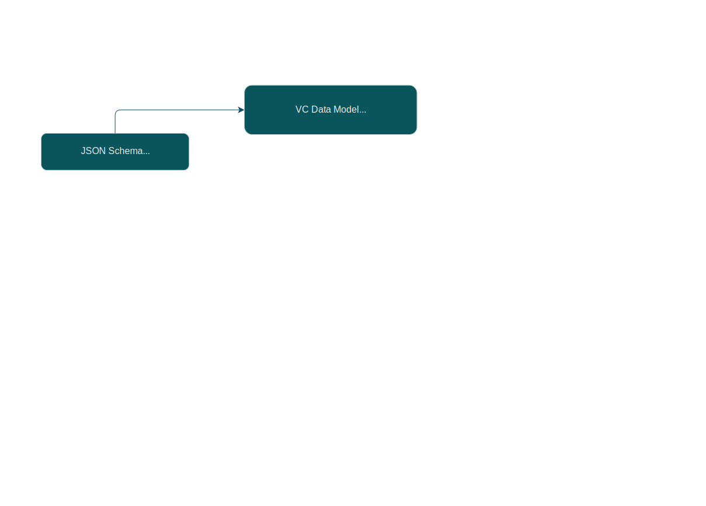

W3C Verifiable Credentials Working Group Specifications
It all starts with a data model…
Structural check of a document

Credentials should be secured
Securing through JSON Web Tokens & co.

Securing “within” the credential…

…with specific cryptosuites
 ">
Manage suspension/revocation of credentials

Standard cryptosuites
![The image is a flowchart showing the categorization of various cryptographic suites and their respective canonicalization methods. The chart branches to three main cryptosuites documents: EdDSA (based on Edwards curves), ECDSA (based on ECDSA curves), and BBS (based on BBS schemes). The EdDSA suite further divides into two specific cryptosuites: eddsa-rdfc-2022 (using RDFC-1.0 for canonicalization) and eddsa-jcs-2022 (using JCS for canonicalization). The ECDSA suite branches into three specific cryptosuites: ecdsa-rdfc-2019 (using RDFC-1.0 or canonicalization), ecdsa-jcs-2019 (using JCS canonicalization), and ecdsa-sd-2023 (using RDFC-1.0 for canonicalization and providing selective disclosure schemes). The BBS suite splits into one method: bbs-2023 (using RDFC-1.0 for canonicalization and providing selective disclosure schemes).](./Tools/Images/All_Cryptosuites.svg)
Example: Basic credential…
{
"@context": [
"https://www.w3.org/ns/credentials/v2",
"https://www.example.org/vocabs/alumni"
],
"id": "https://university.example/Credential12",
"type": ["VerifiableCredential", "ExampleAlumniCredential"],
"issuer": "did:example:2g55q91",
"credentialSubject": {
"id": "https://www.example.org/persons/pat",
"name": "Pat",
"alumniOf": {
"id": "did:example:c276e12ec21ebfeb1f712ebc6f1",
"name": "Example University"
}
},
…
…JSON Schema and status references
…
"credentialSchema": {
"id": "https://uni.example/Credential12-schema-credential",
"type": "JsonSchemaCredential"
},
"credentialStatus": {
"id": "https://uni.example/statuslist#123456",
"type": "BitstringStatusListEntry",
"statusPurpose": "revocation",
"statusListIndex": "123456",
"statusListCredential": "https://uni.example/StatusList"
},
…
…and signed using ECDSA
…
"proof": {
"type": "DataIntegrityProof",
"cryptosuite": "ecdsa-rdfc-2019",
"created": "2010-01-01T00:00:00Z",
"expires": "2040-01-01T00:00:00Z",
"verificationMethod: "did:example:2g55q91#ecdsa-public-key"
"proofPurpose": "assertionMethod"
"proofValue": "zQeVb…Wx"
}
}
This is a set of slides showing the relationships of the various Recommendations that the W3C Verifiable Credentials Working Group plans to publish in 2024.
To start the slide show, turn on JavaScript and press Shift+F5 (or Command+Enter on Mac) or click on a slide. Return to the index by pressing the Esc key.